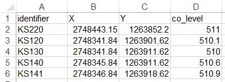
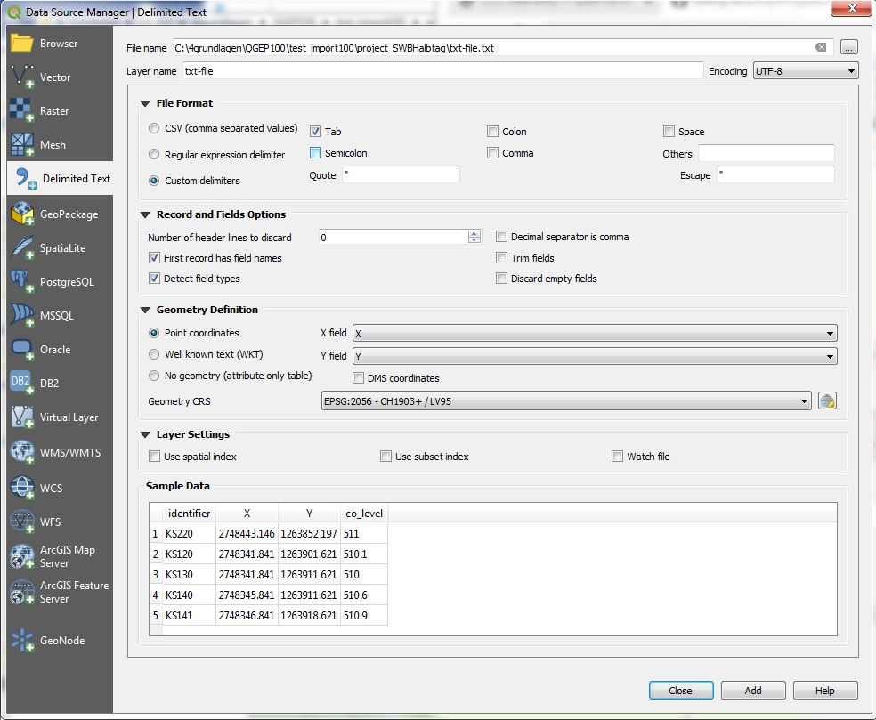
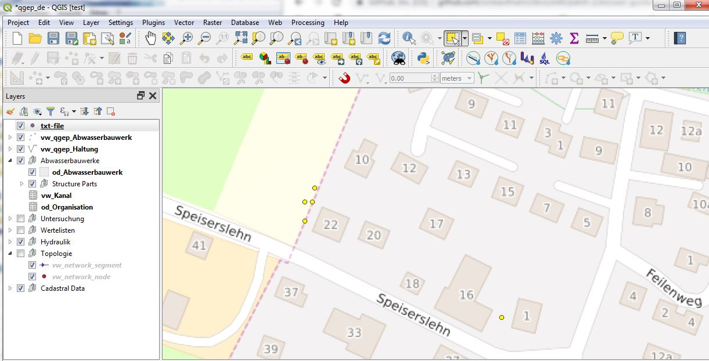
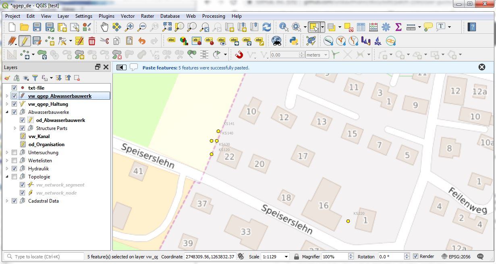
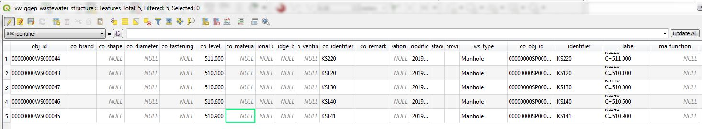
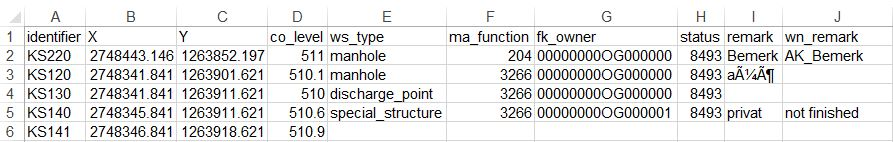

Importation des données
Note
Ce chapitre traite de l’importation de données non‑INTERLIS. L’importation et l’exportation des données INTERLIS sont décrites dans le chapitre Administration.
Il est assez simple d’importer des données (géométrie et attributs) depuis un logiciel externe. Une description générale ainsi qu’un exemple concret sont présentés ci‑après.
Généralités
Vous devez ajouter les données que vous souhaitez importer en tant que couche (vectorielle) dans le projet TWW.
Les noms de champs des attributs doivent être identiques à ceux des champs de la couche TWW. Lorsque cela est possible, privilégiez des formats standards ouverts et non contraignants, tels que le GeoPackage. Lors de l’utilisation de fichiers SHP, la limitation à 10 caractères du format DBF empêche une correspondance correcte des attributs (les noms de champs alias ne fonctionnent pas).
Si vous utilisez un projet traduit, veillez à utiliser les noms de champs anglais (et non les noms traduits que vous trouvez comme alias des champs).
S’il existe un champ avec une liste de valeurs, vous devez utiliser le code et non le texte affiché.
Si vos champs sont préparés comme décrit ci‑dessus, il vous suffit de copier‑coller les données dans la couche TWW.
Pourquoi toutes ces règles ? Vous ne copiez pas les données dans une couche du projet QGIS, mais directement dans une vue ou une table de la base de données PostgreSQL. La base de données ne connaît rien de la configuration du projet QGIS (noms d’alias ou relations de valeurs). Dans la base de données, seuls les déclencheurs « triggers » définis sont pris en compte. Ainsi, un obj_id est créé automatiquement.
Si vous souhaitez importer de nouvelles valeurs dans des enregistrements existants (par exemple pour mettre à jour le champ renovation_necessity de la couche vw_tww_reach), vous ne pouvez pas utiliser le copier‑coller, puisqu’il ne s’agit pas de nouveaux enregistrements. Pour ce type d’opération, vous pouvez utiliser la calculatrice de champs de QGIS.
Exemple : importation de regards à partir d’un fichier TXT :
Les images ont été réalisées dans QGEP, mais les étapes sont identiques dans TWW.
Modifiez les noms des champs en identifier, x, y, co_level.

Open the txt-file with .

You have now a vector-layer with your points in the TWW-project
Sélectionnez les points de la nouvelle couche

Choose .
Sélectionnez la couche vw_tww_wastewater_structure et activez le mode édition.
Choisissez : .


Note
Le champ ws_type est défini par défaut sur manhole. L’identifiant est utilisé non seulement pour le wastewater structure, mais également comme cover_identifier et comme wastewaternode_identifier.
Exemple : importation de regards avec attributs :
Exemple pour ajouter des attributs supplémentaires

Le champ ws_type constitue une exception. Les valeurs possibles sont manhole, special_structure, infiltration_installation et discharge_point.
Pour les autres champs associés à des listes de valeurs, vous devez utiliser le code.
Dans l’exemple ci‑dessus, les valeurs du champ ma_function dans les lignes discharge_point ou special_structure n’ont aucun effet.